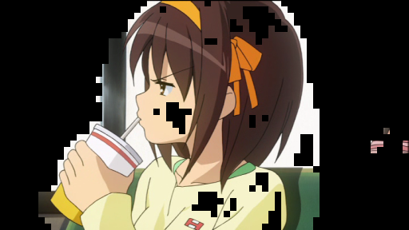
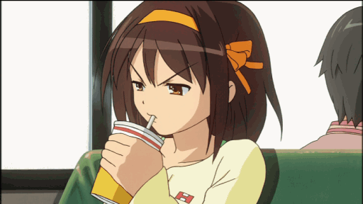

T‰m‰ dokumentaation liite havainnollistaa videonpakkauksen silmin n‰ht‰vi‰, osin h‰viˆllisi‰ vaiheita, joissa liikkuvaa kuvaa pakataan tunnistamalla muutoksia ja v‰hent‰m‰ll‰ v‰ri-informaatiota kuvissa ja niiden osa-alueissa.
| 1 Kaksi testikuvaa, jotka esitt‰v‰t kahta per‰kk‰ist‰, erilaista kuvaa animaatiossa. | |
| 1.1 Edellinen kuva, pakkaamaton RGB 24 bitti‰/pikseli | 1.2 Nykyinen kuva, pakkaamaton RGB 24 bitti‰/pikseli |
|
|
| 2 Muuttuneet 8 x 8 pikselin lohkot. | |
| 2.1 Muuttuneet lohkot, kun muuttuvuusperuste on jonkin lohkon pikselin v‰rimuutoksen pituus RGB-avaruudessa minimiarvolla 8. Kuvaan valikoituu melko tarkasti ne alueet, joiden muutoksen huomaa paljaalla silm‰ll‰. Osa poskea ja paitaa todella sattuvat pysym‰‰n samanv‰risin‰. P‰‰n ymp‰rill‰ on taustaa mukana hiusten heilahtamisen takia. | |
|  | |
| 2.2 Muuttuneet lohkot RGB-minimiet‰isyydell‰ 16. Nyt valkoinen muki on riitt‰v‰n samanv‰rinen kuin valkoinen tausta, kun se osuu samalle kohtaa. Sen sijaan hiuksissa on havaittavissa pient‰ palikoitumista, kun jotkin lohkot eiv‰t muutu. | |
| 2.3 Muuttuneet lohkot RGB-minimiet‰isyydell‰ 24. Palikoituminen korostuu hiuksissa. Erityisen huomattavaa on, ett‰ h‰iritsev‰ palikoituminen n‰ytt‰‰ kasvavan nopeammin kuin muuttuvien lohkojen m‰‰r‰ v‰henee; et‰isyydell‰ 24 on jo silm‰‰npist‰vi‰ h‰iriˆit‰, mutta lohkojen m‰‰r‰ ei v‰hene mitenk‰‰n olennaisesti, mik‰ olisi hyv‰ asia pakkauksen kannalta. | |
| 3 Koko kuvalle yhteinen v‰ripaletti. | |
| 3.1 Kuva, jolle on muodostettu optimaalinen 256 v‰rin paletti median cut -menetelm‰ll‰, ja sen j‰lkeen sovitettu paletti k‰ytt‰m‰ll‰ perusteena kuvan ja paletin v‰riarvojen pienint‰ et‰isyytt‰ RGB-avaruudessa. Kuvasta voi havaita, ett‰ tasaisissa v‰riliu'uissa kuten hiuksien takaosassa ja vihre‰ss‰ penkiss‰ n‰kyy raidoittumista v‰rien vaihtuessa portaittain aina sopivimmalle paletin v‰rille. | 3.2 Paletin 256 v‰ri‰ 16x16 ruudun ruudukkona. |
|  | |
| 3.3 Kokeilu: Kuva, jolle on luotu v‰ripaletti kuten kuvassa 3.1 median cut -menetelm‰ll‰, mutta paletin v‰rit on sovitettu kuvaan k‰ytt‰en octree-hakupuuta. Octree-sovitus on olennaisesti l‰himm‰n RGB-naapurin lineaarista etsimist‰ laskennallisesti kevyempi. Tulos on kokonaisuudessan ala-arvoinen, vaikka octree-sovituskin selv‰sti toimii: v‰ris‰vyt ovat useimmiten melko l‰hell‰ parasta vaihtoehtoa, mutta eiv‰t silti riitt‰v‰n l‰hell‰. | |
| 4 Kaksi per‰kk‰ist‰ kuvaa pakattuna v‰hent‰en v‰ri-informaatiota kuvan osa-alueissa. Kuvat 4.1 ja 4.2 esitt‰v‰t jo periaatteessa t‰ydellisesti videonpakkaajalla pakattua ja purettua kuvasignaalia sellaisena kuin se lopulta n‰kyy. | |
| 4.1 Edellinen kuva, jossa 256 v‰rin paletin j‰lkeen on 16 x 16 pikselin alueille, "p‰‰lohkoille", luotu lohkokohtainen paikallinen 16 v‰rin paletti. Lohkopalettien luomisessa on j‰lleen k‰ytetty median cut -menetelm‰‰. | 4.2 Nykyinen kuva purettuna pakatusta videosta. T‰ss‰ on luotu p‰‰lohkoille 16 v‰rin paletit kuten 4.1:ss‰, ja tallennettu videotiedostoon vain muuttuvat 8 x;nbsp;8 pikselin lohkot. Videota purkauessa vastaavat lohkot on sitten piirretty 4.1:ss‰ olevan kuvan p‰‰lle. |
|
|
Kuvien l‰hde: The Melancholy of Haruhi Suzumiya © 2006-2007 Nagaru Tanigawa / Noizi Ito / member of SOS
30.11.2008 Artturi Tilanter‰